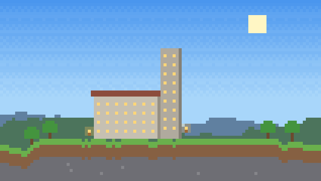
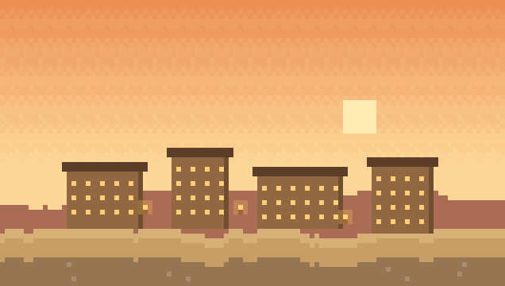
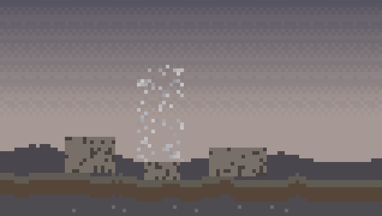
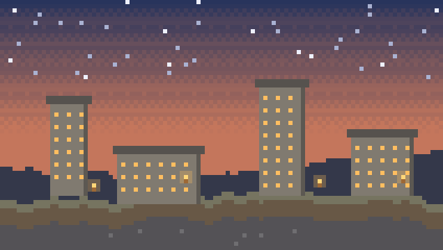
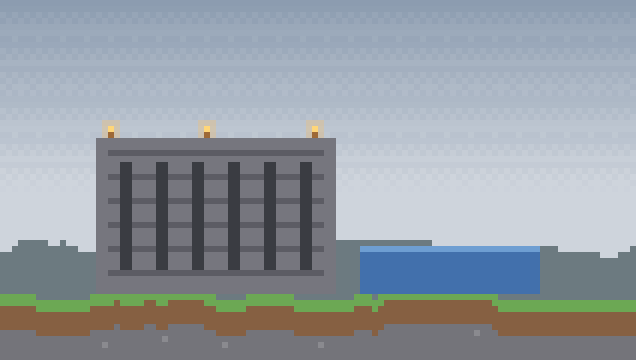
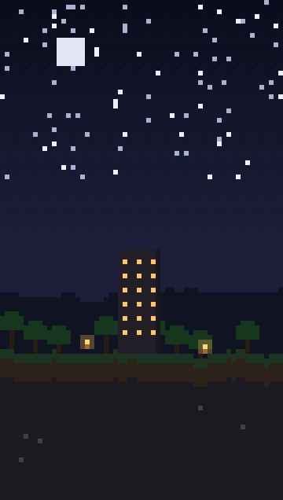
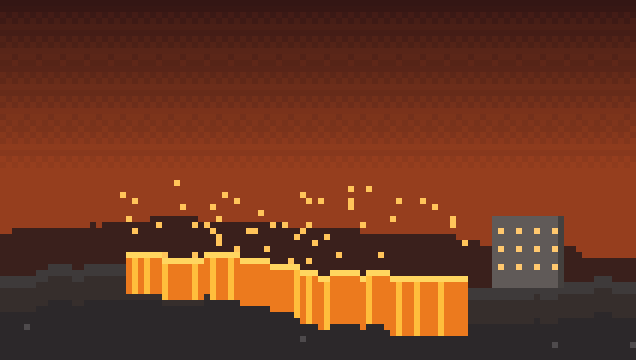
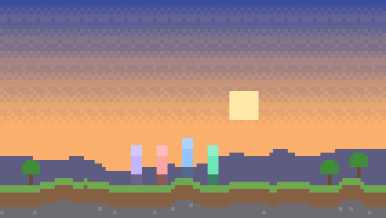

Cómo se ve
La sección, funcionando
Este bloque lleva el mismo velo rojo y la misma foto de fondo que
#galeria tiene hoy en el sitio, así que es literalmente cómo quedaría.
Galería
Las bases, los wipes, los eventos y los desastres.








El cofre está vacío
Todavía no subimos nada. Si tenés capturas de cualquiera de nuestros servidores, mandalas al Discord y las montamos acá.
Mandar capturas al Discord →Bajá y subí despacio: cada foto se mueve dentro de su marco. Pasá el mouse por encima para ver la etiqueta. Hacé clic para abrir el visor — en el celular, deslizá con el dedo.
Qué se mueve
Seis efectos, cinco sin JavaScript
Todo anima transform y opacity nada más, como manda el
README. El movimiento va colgado del scroll con animation-timeline: view(),
que es lo que ya usa el resto del sitio, así que corre en el compositor y no toca
el hilo principal.
Colocado por scroll
Cada slot entra con un pop desde abajo. Como cada uno lleva su propia línea de tiempo, el escalonado sale solo del scroll: no hay delays fijos que se desincronicen si alguien baja rápido.
CSSParallax dentro del marco
La foto va un 14% más grande que su slot y se desplaza de −5% a +5% mientras la sección cruza la pantalla. Es lo que le da profundidad al mosaico. El marco no se mueve, así que el layout nunca salta.
CSSEtiqueta de ítem
Al pasar por encima aparece un recuadro con borde violeta, guiño a los tooltips del juego: título arriba, servidor y año abajo. En pantallas táctiles no hay hover, así que ahí la etiqueta se queda puesta.
CSSBisel de slot
El hundido de inventario sale de dos inset en el
box-shadow — claro arriba a la izquierda, oscuro abajo a la derecha.
Cero imágenes, cero peso, y al pasar por encima se levanta 3px.
Filtros que apagan
Los filtros son radios ocultos y un :has() en el contenedor. Las que
no coinciden no desaparecen: se apagan en gris. Así el mosaico no se recompone
de golpe cada vez que tocás un filtro.
Visor que crece desde la foto
Al hacer clic, la miniatura se transforma en la foto grande con
View Transitions en vez de aparecer de la nada. Donde el navegador no
lo soporte, entra con un fundido normal y nadie se entera.
Lo aburrido pero importante
Cómo se maneja en el día a día
Una galería no se muere por el diseño, se muere porque nadie la actualiza o porque pesa 12 MB. Esto es lo que la mantiene viva.
De dónde salen las fotos
Un canal #capturas en el Discord donde la gente tira lo que quiera,
sin filtro. Cada wipe o evento, una persona baja y elige entre seis y diez. Ese
es todo el proceso. La regla para elegir: si la captura no cuenta algo — una base,
un desastre, un evento, una noche concreta — no entra. Diez fotos con historia le
ganan a cuarenta capturas de un bioma bonito.
Dos tamaños por foto, siempre
Es lo único innegociable. La miniatura es lo que carga la página; la grande solo se descarga cuando alguien abre el visor. Sin esto, doce capturas PNG del juego son 30 MB y en datos móviles la sección no abre.
| Archivo | Ancho | Formato | Peso objetivo | Cuándo carga |
|---|---|---|---|---|
| -thumb.webp | 640 px | WebP q78 | 60–90 KB | Con la sección, en diferido |
| .webp | 1920 px | WebP q80 | 200–300 KB | Solo al abrir el visor |
Para convertir de una, con cwebp (viene en el paquete
webp de cualquier distro, y hay build para Windows):
for f in *.png; do
cwebp -q 78 -resize 640 0 "$f" -o "${f%.*}-thumb.webp"
cwebp -q 80 -resize 1920 0 "$f" -o "${f%.*}.webp"
doneCada captura lleva sus datos
Título, servidor, año y quién la tomó. Esto es lo que convierte un montón de
imágenes en la parte visual de los cuatro años que cuenta la sección de Proyectos:
los nombres de los slots son los mismos que los de la línea de tiempo. También es
lo que le da sentido al filtro, y el alt sale casi solo.
Nombre de archivo: 2023-canitas-base-nocturna.webp. Año adelante para
que la carpeta se ordene sola.
El alt no es opcional
Describe lo que se ve, no lo que es: «Base de piedra con torre iluminada sobre un lago, de noche», no «captura1». Son treinta segundos por foto y es la diferencia entre que la galería exista o no para quien usa lector de pantalla.
Cuándo dejar de escribir HTML a mano
Hasta unas treinta fotos, el bloque literal en index.html es lo más
simple y no rompe nada. Pasando de ahí, o si sube más de una persona, conviene
mover la lista a un img/galeria/galeria.json y que el JS la dibuje:
agregar una foto pasa a ser una línea. Antes de ese punto es complicarse por gusto.
Lo que no haría
- Carrusel que avanza solo. Nadie espera a que le toque su turno a la foto 7.
- Scroll horizontal secuestrando la rueda. Se ve espectacular en el video de demo y es un infierno en el celular.
- Una librería de lightbox. Son 40 KB para algo que
<dialog>hace nativo en 45 líneas. - Marca de agua sobre las capturas. Son fotos de la comunidad, no stock.
- Subir los PNG tal como salen del juego. Es el único error de esta lista que sí rompe el sitio.
Si te gusta
Qué hay que tocar
| Archivo | Qué se le hace | Tamaño |
|---|---|---|
| onepage.css | Bloque nuevo de galería, justo donde hoy está .gallery / .gallery-empty, que se van |
~180 líneas |
| onepage.js | El visor: abrir, cerrar, flechas y la transición | ~45 líneas |
| index.html | Se reemplaza el contenido de <section id="galeria"> |
~30 líneas |
| README.md | Actualizar «Cómo agregar fotos a la galería» con el flujo de dos tamaños | ~1 sección |
Y agregar una foto queda en pegar esto:
<figure class="gal-slot" data-cat="bases" data-size="wide">
<img src="img/galeria/2023-canitas-base-nocturna-thumb.webp"
data-full="img/galeria/2023-canitas-base-nocturna.webp"
alt="Base de piedra con torre iluminada sobre un lago, de noche"
loading="lazy" width="1600" height="900" />
<figcaption class="gal-tip">
<b>La base del lago</b><span>Canitas Wipe · 2023</span>
</figcaption>
<button class="gal-open" type="button" aria-label="Ampliar: La base del lago"></button>
</figure>
data-size acepta wide, tall y big.
Sin él, la foto ocupa un slot normal. Es lo único que hay que pensar, y se puede
cambiar después sin tocar nada más.
El siguiente paso
Decime si te cierra el concepto y lo integro a index.html,
onepage.css y onepage.js — dejando la galería en estado vacío,
que es lo honesto hasta que haya capturas de verdad. Si preferís otra dirección,
también hay versión en cinta horizontal y versión en muro tipo polaroid.